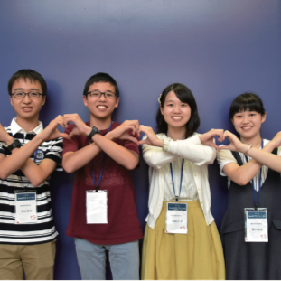

VOICE OF SENIORS
-
Your Hero
私たちはinochi学生フォーラムの活動を通じ、「命を救う」という課題に真正面から取り組みました。自分達が普段から接しない人々と議論を深めることで、より多くの考え方や価値観、知識を得ることが出来ました。さらに刺激し合える仲間と協力し、競い合うことでより成長することができました。皆さんと過ごした時間は一生の宝物になったと思います。
-
brook
私たちは、このプロジェクトを通して、意見を激しくぶつけ合いながらも真摯に課題に向き合い続けたことで、チームの強みとなる団結力のあるプレゼンに繋がりました。未来フォーラムでの発表はそれまで協力してくださった沢山の方々に見守られ、大きく成長した私たちのプランを堂々と伝えることが出来ました。